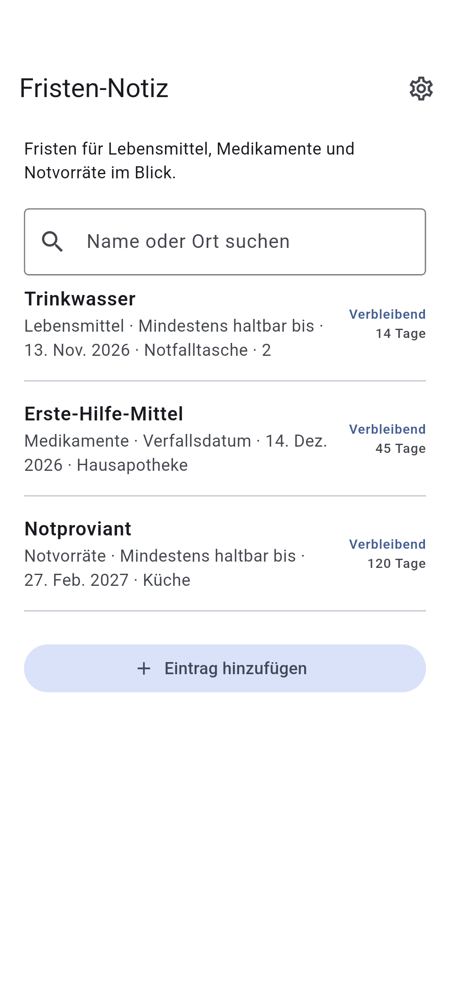

DOTNULL / Fristen-Notiz
Fristen auf einen Blick.
Fristen für Lebensmittel, Medikamente und Notvorräte im Blick.
Die App befindet sich in Entwicklung.
Über die App ↓
HOW IT WORKS
Über die App
01
Name und Datum hinzufügen
02
Datumsart wählen
03
Nächste Fristen zuerst sehen
Über die App
- Kategorie
- Lebensmittel · Medikamente · Notvorräte · Sonstiges
- Aufbewahrungsort (optional)
- Name oder Ort suchen
- Datumsart
- Mindestens haltbar bis · Zu verbrauchen bis · Verfallsdatum
Datenschutz
Einträge werden auf dem Gerät gespeichert und sind offline verfügbar.
Beim Löschen der App oder einem Gerätedefekt können Daten verloren gehen.
Deine Einträge werden auf diesem Gerät gespeichert. Der Werbeanbieter kann Daten verwenden.
Prüfe das Datum auf dem Produkt.